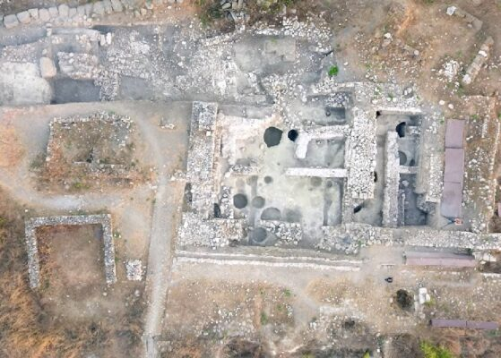

Bandırma Hakkında
Bandırma, Marmara Denizi'nin güneyinde, Bandırma Körfezi'nin en iç kısmında merkezlenen Balıkesir iline bağlı bir ilçedir. Altıeylül ve Karesi'nin ardından, nüfus bakımından Balıkesir'in üçüncü büyük ilçesidir. Son yıllarda hızla gelişen Bandırma, aynı zamanda Türkiye'nin en büyük limanlarından birine de sahip olan bir ilçedir. Bandırma Limanı'na her gün düzenli olarak İstanbul'dan feribot seferleri yapılmaktadır. Ekonomik olarak oldukça güçlü olan Bandırma, Türkiye için önemli bir sanayi ve tavukçuluk şehridir. Kültür sanat etkinliklerine ev sahipliği yapan şehirde her sene büyük yoğunluk ile turist çekmektedir. 2021 yılı sonu itibarıyla resmî nüfusu 161.894 olarak belirlenmiştir.Tarihçe
Bizans ve öncesi dönem Tarihte Kizikos, Panderma, Panormos gibi adlar alan Bandırma çok eski bir yerleşim merkezidir. Kuruluşu hakkında kesin bilgi olmayan Bandırma'nın Kizikos'ta yapılan kazılarda bulunan bir lahitten İÖ. VIII.-X. yüzyıllar arasında kurulduğu düşünülmektedir. Bölge ile ilgili ilk arkeolojik araştırma 1952 yılında Kurt Bittel tarafından yapıldığı ve kazılar sonucunda elde edilen arkeolojik veriler ve antik metinlerin verdiği coğrafi bilgiler ışığında Cilalı Taş Devri ve Bakır Taş Çağı,Geç Neolitik Çağ'ın bir devamıdır.1954 yılında bilimsel çalışmalar Prof. Dr. Ekrem Akurgal tarafından kazılar başlamıştır.1960 yılına kadar devam eden kazı, 1988 yılında Prof Dr.Tomris Bakır tarafından yeniden başlatılmıştır. Her iki kazı çalışmasında ortak arkeolojik veriler bölgenin tarihini M.Ö. 6. bin yılının ortalarına uzandığı Neolitik ve 5. bin yılının sonlarına gelen Kalkolitik yerleşmelerin olduğu tespit edilmiştir. 2009 yılında Kizikos ve Daskyleion antik kentler üzerinde araştırma yapan belgesel yönetmeni Tekin Gün bölgedeki antik kalıntılar Daskyleion’da Troya gibi erken dönem yerleşimlerinin olduğu Misya kentidir. Antik kent ve çevresinde yapılan araştırmalar,arkeolojik kazılarda çıkan ateşte pişirilmiş topraktan veya kilden yapılan kaplar ilk yerleşimin M.Ö.7 bin-M.Ö.5 bin yıllarında iskan edildiği sanılmaktadır.Bandırma ilk başta Misya bölgesi sınırları içerisindeydi. Bu yıllarda adı, "güvenilir liman" anlamına gelen Panormos idi. MÖ 334'te Büyük İskender, Perslerin elinde bulunan bölgeyi kendi devletinin sınırları içine kattı. İskender'in ölümünden sonra bölge Romalıların eline geçti. Roma İmparatorluğu'nun 330 yılında ikiye ayrılmasından sonra Doğu Roma İmparatorluğu'nda kalan Bandırma, 1076'da Kutalmış tarafından ele geçirildi; ancak bölge 1106'da tekrar Doğu Roma İmparatorluğu'na geçti.Gezilecek Yerler
- Bandırma Arkeoloji Müzesi
- Kyzikos Antik Kenti
- Daskyleion Antik Kenti
- Haydar Çavuş Camii
- Bandırma Ortaokulu
- Bandırma Eski İskele Binası
- Duyun-i Umumiye Binası
- Eski Gar Binası
- Bandırma İlçe Halk Kütüphanesi
Nüfus
Bandırma nüfusu 2022 yılına göre 164.96
Bu nüfus, 83.381 erkek ve 81.584 kadından oluşmaktadır. Yüzde olarak ise: %50,54 erkek, %49,46 kadındır.
Bu nüfus, 83.381 erkek ve 81.584 kadından oluşmaktadır. Yüzde olarak ise: %50,54 erkek, %49,46 kadındır.